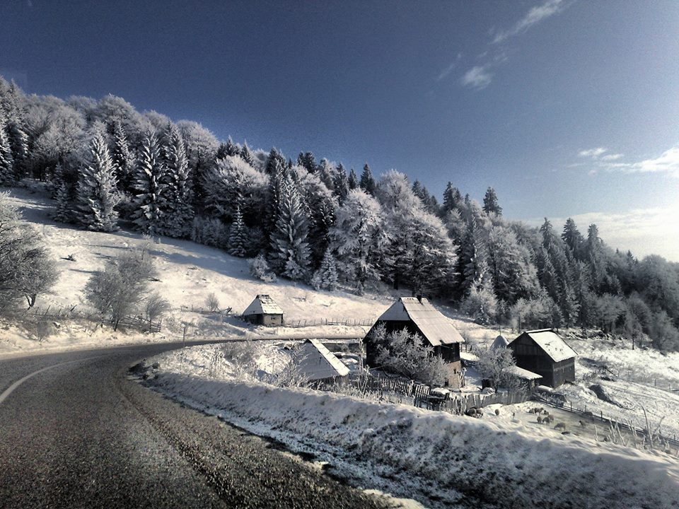

Клима
Преко овог простора крећу се и сударају поларне и суптропске ваздушне масе. Климатске одлике условљене су како великом надморском висином тако и географском ширином и континенталношћу.
Најхладнији мјесец је јануар са средњом температуром -4,5 °Ц и фебруар -3,7 °Ц, а најтоплији мјесец је јул са 15,7 °Ц. Средња годишња температура веома је ниска и износи 6,5 °Ц. Што се тиче падавина зимски мјесеци су сиромашнији од љетних. Средња годишња количина падавина на подручју Хан-Пијеска износи око 1.085-1.433 мм3/м2. Од укупног броја дана са падавинама 30% отпада на сњежне падавине а снијег се задржава преко 120 дана у години. Број вјетровитих дана преовладава над данима без вјетра. Најзаступљенији су сјеверац и јужни вјетар.Најјачи вјетрови су у фебруару и у априлу, а вјетровитост у великој мјери умањује влажност ваздуха. Средња годишња облачност је 5,9 десетина, најоблачнији мјесец је децембар са 7,4 десетина.
Гледано у цјелини клима је субпланинска, одликује се дугим и сњежним зимама и кратким љетима и кратким вегетационим периодима. Карактеристично је да је јесен топлија од прољећа.Хан Пијесак